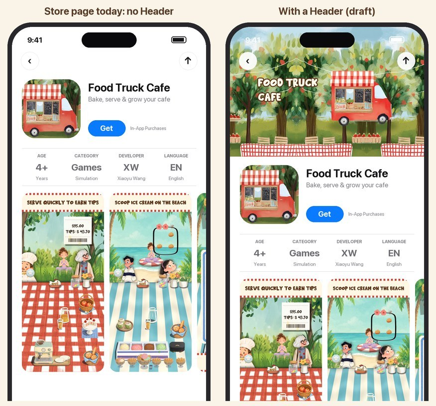
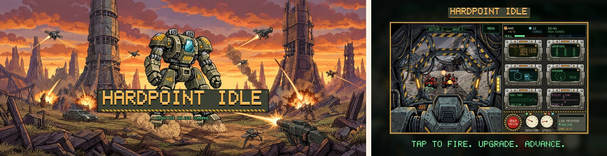
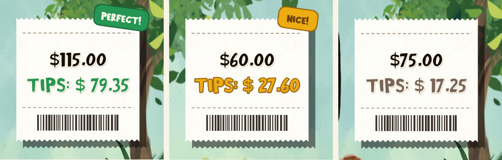

Food Truck Cafe
21 November. 2026.11.20 is live on the App Store; test build 2026.11.21 (1) is in TestFlight.
1Next
You
Test build 2026.11.23 (2) is in TestFlight (ready 11:50). It is the release candidate: everything of today, the truck fixes and the tip levels included.
Release 2026.11.23 is submitted to Apple (13:20): build (2), your What's New, the new screenshots. It goes out by itself once Apple approves it.
The last manual test:
Cannot be tested yet: the update card (it needs a newer version on the store).
Still open: Header and Search Results (Q&A); the three ad choices (Analysis); the C chapter scenes (its tab).
Me
I watch Apple's review and tell you when it is approved. If your last test finds something, say so: the submission can be pulled back and a new build put in.
Early December: look at Unity's Finance page for November's balance.
2Q&A
What might cause the ads to fail to load? (23 Nov)
- What the numbers say: in the US player's two ad-less visits Unity got no request at all from the phone. So the ads did not fail one by one; the ad system never started in those visits.
- How that happens in our code: the game starts Unity Ads once, at the start menu. If that start fails, nothing tries again for the whole visit; each day end only waits 20 seconds for it and then goes on without an ad.
- What makes the start fail: no or weak network in the first seconds after opening the game (lift, underground, Wi-Fi still connecting, a Wi-Fi that wants a log-in page); Unity's servers not answering in time; a network or app that filters ad addresses (some VPNs, DNS filters, school or work Wi-Fi). On the very first launch the start also waits for the tracking question, up to 15 seconds.
- Not causes: saying no to tracking (ads still come), Remove Ads (the game still asks Unity then), the release itself (other players on the same version get ads).
- The fix is the first box in Analysis: try the start again during the visit.
Header and Search Results: what does a player see with and without them? (23 Nov)
- What they are: two optional pictures (or silent looping videos, 5 to 30 s) Apple added this autumn. Only iPhones and iPads on iOS 27 show them. Each can be added or left empty on its own.
- Header, with: a banner above our icon, name and Get button, about a third of the first screen. Nothing is taken away; the screenshots move down. Without (today): the page starts with the icon and name, the screenshots show higher up.
- Search Results, with: one wide picture replaces our three screenshots in the search list. Without (today): search shows our first three screenshots, as now.




- Real pages with and without: I cannot capture them from the Mac: Apple's web store does not show these slots, only the App Store app on iOS 27. On your iPhone, search any big game: a result with one wide picture has the search slot filled, one with three screenshots has not; open a game and a banner above the icon is its header.
- An upright iPhone shows only the middle of the header (the picture is very wide, 21:9); the truck and name must sit in the middle, as in the draft.
- My view: a Header only adds, so it is worth one good picture when there is time. The Search Results picture is a trade: one picture instead of three screenshots that already show the game well; I would leave it empty, or try it later with Apple's A/B test.
- Not needed for today's release. Both can be added any day without a new version (Apple reviews the picture alone).
3Current
23 November. Everything approved today is in test build 2026.11.23 (2).
Release 2026.11.23 is submitted (23 November, 13:20, on your word). Waiting for Apple's review.
- In it: build 2026.11.23 (2), your What's New, the new screenshots on iPhone and iPad.
- It goes out by itself once Apple approves it (set on your word, 23 November).
Tip levels, as built. In build (2).

- One thing differs from the drawing's rule, and you should know it: every item you serve already fills the customer's patience up to the next whole flower. So an order always ends on whole flowers, and "less than a third left" could never happen. The level is therefore read from the flowers left when the order is finished:
- Perfect: all flowers (chapter 2: three or four). Nice: two flowers. Just OK: one flower.
- The money is unchanged. The "perfect" sound and the double tap now go with PERFECT! (they came a little more often before, from half the patience left).
4MVP
Release 2026.11.23, submitted 23 November. Everything changed since release 2026.11.20:
- Kitchen flow: choux and cake are made in steps. The oven bakes them onto the baking tray or the cake plate in the kitchen, the mixer adds the cream, the fruit board adds the fruit, then they fly to the table. The kitchen does every step by itself, with no pause.
- New kitchen pieces: the baking tray (four choux, two by two, four stages, with a shadow), the cake plate's stages (empty, sponge, cream, finished), the lean handheld mixer with its bowl and the kitchen's whisk as its blade (at rest and running). All can be arranged; the tray starts on the kitchen table and always lies fully on its top.
- Kitchen times: bread bakes 5 s; choux, cake and cookies 3 s. The ice cream blender runs 3 s (1.8 s with two flavours). Pausing the game stops the kitchen too.
- Chapter 2 opens after day 9 of chapter 1 (the player chooses when to go). On the map day 9 is a big glowing star with a dotted path to the arrow; finishing it gives a star and the truck drives to chapter 2.
- Chapter 2, first day: every ice cream is a waffle bowl with one or two scoops; normal orders from the second day.
- Chapter 2 gift: a fourth patience flower for every chapter 2 customer; in the tutorial a reward card shows it and it flies to the first customer.
- Map: today's day card opens by itself.
- Customers: they think for 2 s (three dots in the middle of the bubble) before the order shows.
- Tutorial: the pointer is a hand cookie with a gold glaze glow.
- Shop: NEW on a tab that holds something new; locked items stay visible with a padlock (cookies and coconut until chapter 2, the star Yoga until she is hired); two new locked star cards, Chef (20) and Dining table (25); cards aligned; the extra cup reads "One more plate for brewed coffee."
- Look: a taller hen on the table; the tutorial's "Ready to go?" card on paper with cookie buttons.
Since test build 2026.11.21 (1): pull handles 12 % bigger; the shop's EARNED line in the Daily Treats letters; the chapter 2 tutorial waits for a tap on the blender; the tutorial hand moves up and down; no arrange banner in the chapter 2 tutorial; the mixer set larger, its whisk deeper in the cream and kept wide while it turns. All of it is in test build 2026.11.23 (0). After it: the four small fixes of the scan; the cookie truck driving on the map; thinking dots on every order; the apple step in the tutorial; days counted inside each chapter; day 9's star for everyone who finished day 9; the update card; the kitchen stopping with the day; day 9 calm once its star is taken (all in test build 2026.11.23 (1)); then the truck following every day and driving to a tapped day, the second scan's small fixes, and the tip levels on the receipt (all in build 2).
Not in yet: the chapter 2 tuning (your picks); a sound for the day 9 scene.
5Backlog
Nothing open.
6Analysis
Open from the players of 21 to 23 November: three ad choices.
- The US player who finished the game got no ads in two of three visits: ads seem to fail to start on some launches and are not tried again.
- All five new players with 2 stars on day 1 left at the day's end, where the first ad plays.
7Marketing
Nothing open.